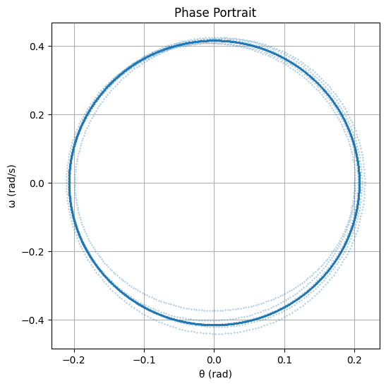

1. Differential Equation for Forced Damped Pendulum
The general form of the equation of motion for a forced damped pendulum is:
Where: - \(\theta(t)\) is the angular displacement of the pendulum as a function of time. - \(\gamma\) is the damping coefficient (measuring the rate of energy dissipation). - \(\omega_0\) is the natural frequency of the pendulum (without damping or external driving force). - \(A\) is the amplitude of the external driving force. - \(\omega\) is the driving frequency of the external force.
2. Small-Angle Approximation
For small oscillations where \(\theta(t)\) is small (usually in radians), we can make the approximation:
This leads to the simplified linear equation:
This is a second-order linear ordinary differential equation with constant coefficients, which is much easier to solve.
3. Solution for the Undamped, Unforced Case (Free Pendulum)
For the case when there is no damping (\(\gamma = 0\)) and no external driving force (\(A = 0\)), the equation simplifies to:
This is a simple harmonic oscillator, and its solution is:
Where: - \(\theta_0\) is the initial amplitude. - \(\phi\) is the phase constant determined by initial conditions.
4. Solution for the Damped, Unforced Case (Damped Pendulum)
When we add damping but no external forcing (i.e., \(A = 0\)), the equation becomes:
The solution to this equation depends on the value of the damping coefficient \(\gamma\). It can be categorized as:
- Underdamped (\(\gamma^2 < 4 \omega_0^2\))**: The pendulum oscillates with exponentially decaying amplitude.
- Critically damped (\(\gamma^2 = 4 \omega_0^2\)): The pendulum returns to equilibrium as quickly as possible without oscillating.
- Overdamped (\(\gamma^2 > 4 \omega_0^2\)): The pendulum returns to equilibrium without oscillating, but slower than in the critically damped case.
The solution for the underdamped case is:
Where: - \(\omega_d = \sqrt{\omega_0^2 - \left(\frac{\gamma}{2}\right)^2}\) is the damped frequency. - \(\theta_0\) and \(\phi\) are determined by initial conditions. - The exponential term \(e^{-\gamma t / 2}\) represents the decaying amplitude.
5. Forced, Undamped Case (Driven Pendulum)
When there is no damping (\(\gamma = 0\)), but there is an external driving force, the equation becomes:
The solution to this equation is:
Where: - \(\delta = \tan^{-1}\left(\frac{\gamma \omega}{\omega_0^2 - \omega^2}\right)\) is the phase shift. - \(A\) is the driving amplitude. - \(\omega\) is the driving frequency. - \(\omega_0\) is the natural frequency of the pendulum.
6. Forced and Damped Case (Complete System)
For the complete system with both damping and external driving force, the general solution is given by the combination of the transient and steady-state solutions:
- The transient part of the solution represents the initial conditions and will decay over time due to damping.
- The steady-state part of the solution represents the long-term behavior of the system, which oscillates with a constant amplitude at the driving frequency.
For steady-state oscillations, the solution is:
This shows how the system responds to the periodic driving force in the long run.
7. Energy Considerations
The total mechanical energy \(E(t)\) of the system is the sum of the kinetic energy and the potential energy:
Where: - \(m\) is the mass of the pendulum. - \(l\) is the length of the pendulum. - \(\theta'(t)\) is the angular velocity. - \(\theta(t)\) is the angular displacement.
For the forced damped pendulum, the energy fluctuates due to the energy supplied by the external driving force and the energy dissipated by damping. At resonance (\(\omega = \omega_0\)), the energy absorption is maximized.
8. Resonance and Frequency Response
In resonance, the system oscillates with maximum amplitude. The resonance condition occurs when the driving frequency \(\omega\) equals the natural frequency \(\omega_0\). In this case, the amplitude of the oscillations grows, which can be expressed as:
This shows that resonance can lead to large oscillations, especially if the damping is small. If the damping is large, the resonance effect is reduced.
Summary of Key Formulas
-
Undamped, Free Pendulum (Simple Harmonic Motion):
$$ \theta(t) = \theta_0 \cos(\omega_0 t + \phi) $$ -
Damped, Free Pendulum:
$$ \theta(t) = \theta_0 e^{-\gamma t / 2} \cos(\omega_d t + \phi) $$ -
Forced, Damped Pendulum:
$$ \theta(t) = \frac{A}{\sqrt{(\omega_0^2 - \omega^2)^2 + (\gamma \omega)^2}} \cos(\omega t - \delta) $$ -
Energy:
$$ E(t) = \frac{1}{2} m l^2 \left( \theta'(t)^2 + \omega_0^2 \theta(t)^2 \right) $$ -
Maximum Amplitude at Resonance:
$$ \theta_{\text{max}} = \frac{A}{\gamma \omega_0} $$
We'll use numerical methods to solve the differential equation for the forced damped pendulum. The script will use the solve_ivp function from SciPy to solve the system, and visualize the results with Matplotlib.
Python Script for Simulating the Forced Damped Pendulum:
import numpy as np
import matplotlib.pyplot as plt
from scipy.integrate import solve_ivp
# Parameters
gamma = 0.2 # Damping coefficient (can adjust for underdamped, overdamped cases)
omega_0 = 2 # Natural frequency (rad/s)
A = 1 # Amplitude of the driving force
omega = 1.8 # Frequency of the driving force (change to test resonance behavior)
t_span = (0, 100) # Time span for the simulation
initial_conditions = [0.5, 0] # Initial conditions: [theta(0), theta'(0)]
# Differential equation for the forced damped pendulum
def forced_damped_pendulum(t, y):
theta, theta_dot = y
dtheta_dt = theta_dot
dtheta_dot_dt = -gamma * theta_dot - omega_0**2 * np.sin(theta) + A * np.cos(omega * t)
return [dtheta_dt, dtheta_dot_dt]
# Solve the differential equation using Runge-Kutta method (via solve_ivp)
solution = solve_ivp(forced_damped_pendulum, t_span, initial_conditions, t_eval=np.linspace(0, 100, 10000))
# Extract solution
t = solution.t
theta = solution.y[0]
theta_dot = solution.y[1]
# Plotting the solution: Angular displacement vs. Time
plt.figure(figsize=(10, 6))
plt.plot(t, theta)
plt.title('Forced Damped Pendulum Motion')
plt.xlabel('Time (s)')
plt.ylabel('Angular Displacement (rad)')
plt.grid(True)
plt.show()
# Plotting the Phase Portrait: theta vs. theta'
plt.figure(figsize=(8, 6))
plt.plot(theta, theta_dot)
plt.title('Phase Portrait of the Forced Damped Pendulum')
plt.xlabel('Theta (rad)')
plt.ylabel('Theta\' (rad/s)')
plt.grid(True)
plt.show()
# Frequency Response: The steady-state amplitude vs driving frequency (if needed)
# This could involve running simulations for different values of omega and plotting the resulting amplitude.
def compute_amplitude(omega_values):
amplitudes = []
for omega_val in omega_values:
# Update the global omega
global omega
omega = omega_val
solution = solve_ivp(forced_damped_pendulum, t_span, initial_conditions, t_eval=np.linspace(0, 100, 10000))
amplitudes.append(np.max(np.abs(solution.y[0]))) # Maximum amplitude observed in the solution
return amplitudes
omega_values = np.linspace(0.5, 2.5, 100) # Driving frequency range
amplitudes = compute_amplitude(omega_values)
# Plot Frequency Response
plt.figure(figsize=(10, 6))
plt.plot(omega_values, amplitudes)
plt.title('Frequency Response of the Forced Damped Pendulum')
plt.xlabel('Driving Frequency (omega)')
plt.ylabel('Maximum Amplitude (rad)')
plt.grid(True)
plt.show()



Explanation of the Python Code:
- Parameters:
- gamma: Damping coefficient, controlling the rate at which energy is dissipated from the system.
- omega_0: Natural frequency of the pendulum.
- A: Amplitude of the driving force.
- omega: Driving frequency of the external force.
-
initial_conditions: The initial angular displacement (\(\theta(0)\)) and angular velocity (\(\theta'(0)\)).
-
Forced Damped Pendulum Differential Equation: The function
forced_damped_pendulum(t, y)represents the system of ordinary differential equations: $$ \theta''(t) + \gamma \theta'(t) + \omega_0^2 \sin(\theta(t)) = A \cos(\omega t) $$ We return the derivatives of \(\theta(t)\) and \(\theta'(t)\) in this function for numerical integration.